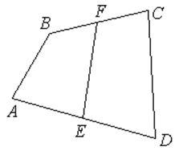

П 4.1 №6
Точки и  – середины сторон
– середины сторон  и
и  четырехугольника
. Докажите, что . Выведите теорему о средней линии
трапеции.
четырехугольника
. Докажите, что . Выведите теорему о средней линии
трапеции.
– середины сторон и четырехугольника
. Докажите, что . Выведите теорему о средней линии
трапеции.РЕШЕНИЕ:
 , ,
, , .
, ,
, , .
Если  – трапеция, стороны
– трапеция, стороны  и
и  параллельны,
тогда
параллельны,
тогда
– трапеция, стороны и параллельны,
тогда – свойство средней линии
трапеции.